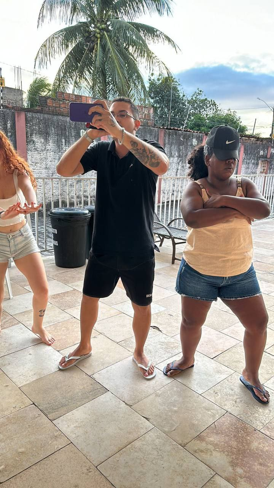

Olá, eu sou o Raphael Coelho
Estudante de Análise e Desenvolvimento de Sistemas, apaixonado por tecnologia e música, e na foto to cantando grafitão no meu tempo livre, mas também gosto de ler e jogar um pouco no pc, sou um cara extrovertido pros amigos de fé e introvertido quando ainda não os conheci.
Pode ficar a vontade pra entrar em contato comigo pelas Redes Sociais: